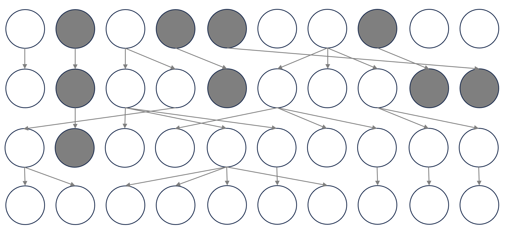

15 Mathematical modeling I
15.1 Lesson preamble
15.1.1 Lesson objectives
- Develop familiarity with mathematical models and why and where they are used in EEB.
- Develop understanding of important models in EEB, including
- The (geometric) growth of a population with constant birth and death rates
- Exponential growth of a population
- The spread of an infectious disease in a susceptible population
- Competition between types, competitive exclusion
- The Wright-Fisher model of allele frequency change at a single, non-recombining locus
- Conceptually understand equilibria and their stability
- Become familiar with the ways approximation is used in modeling complex systems
- Become familiar with how mathematical models can be fit to data
15.1.2 Lesson outline
- Why model?
- Geometric and exponential growth
- Fitting models to the data
- SIR model: when does an epidemic grow?
- Equilibria and stability
- Back to the SIR model
- Competition and competitive exclusion
- Mutation-selection balance
- The Wright-Fisher model: predictions for evolution via drift
15.2 Why model?
Mathematical models are descriptions of biological processes which describe idealized situations and can help us build intuition and understanding for how those processes may unfold in nature. they help us
- clarify assumptions we may have about how complex systems work
- build understanding of how processes in complex systems interact
- generate predictions and hypothesis
- test predictions and hypothesis based on analysis of the model of fitting to data
- determine what data is needed to learn about something (of if it is possible to, given the data that is available, reliably infer parameters of interest)
- determine in what ways certain kinds of data may be problematic or biased
In this lecture, we will discuss six models: (1) a deterministic, discrete-time model of geometric growth of a population with constant per-capita rates of birth and death. (2) A model of exponential growth, the continuous-time equivalent of the geometric growth model. (3) A Susceptible-Infected-Recovered (SIR) model in which interactions between variables shape the transient and long-run the dynamics of the system. (4) A deterministic, continuous-time model of competitive exclusion between individuals of two types (e.g., different species, individuals of the same species carrying different alleles, etc.). (5) An extension of the previous model which maintains diversity via recurrent mutation between types. (6) The Wright-Fisher model, a discrete-time, stochastic model allele frequency change at a single, non-recombining locus. The Wright-Fisher model captures how genetic drift (without mutation, selection, migration, etc.) alone shapes patterns of genetic diversity through time and in the long-run.
15.3 Geometric growth
Let \(N_t\) be the number of individuals at times \(t=0,1,2,3,\dots\). Suppose we know \(N_0\), the initial number of individuals in the population. Assume
- From one time to the next, every individual reproduces at per-captia rate \(b\)
- From one time to the next, every individual dies at per-catpia rate \(d\)
- The population is closed: there is no immigration and no emigration
- There is no stochasticity: individuals do not, by chance, give birth to more/fewer offspring
In this case, we can write describe the population size at generation \(t+1\) in terms of the population size at the previous generation by keeping track of everything that could unfold: the birth of new individuals. The governing equation would be
\[N_{t+1} = N_t + b N_t - d N_t = (1+b-d)N_t, \]
where \(b N_t\) is the number of individuals born into the population and \(d N_t\) is the number of individuals who leave the population because they die. Births and deaths modify the previous population size such that, if \(b > d\), then the population will grow. If \(b < d\), the population will decline in size. If \(b = d\), then the population will stay constant in size. This model is unique insofar as it has a closed form solution, i.e., we know the state of the system at any time in the future given knowledge of its state at time zero:
\[N_1 = (1+b-d) N_0\] \[N_2 = (1+b-d) N_1 = (1+b-d)(1+b-d) N_0\] \[N_3 = (1+b-d) N_2 = (1+b-d) (1+b-d)^2 N_0 = (1+b-d)^3 N_0\]
In general, \(N_t = (1+b-d)^t N_0\) for all \(t\).
When \(b>d\), the population is said to grow geometrically, in that the growth rate \(1+b+d\) is being raised to a power equal to the number of timesteps (e.g., generations) that have passed. Moreover, it is sometimes convenient in discrete time models like this to describe the dynamics in terms of how variables change from one time to the next. In the case of the geometric growth model, we can express the dynamics in terms of change in absolute population size
\[\Delta N_t = N_{t+1} - N_t = (1+b-d) N_t - N_t = (b-d) N_t.\]
In population ecology, \((b-d)\) is called the intrinsic rate of increase or decrease, and often denoted \(r\). If positive, the population grows in a given generation. If not, it becomes smaller.
15.4 Exponential growth
Continuous time analogues of discrete time equations are often written as differential equations. If we assume the times \(t=0,1,2,3,\dots\), we can replace the difference in the previous equation with a derivative to describe the dynamics of a population changing in continuous time:
\[\frac{d N}{dt} = (b-d) N = r N\]
subject to \(N(0) = N_0\). Like the geometric growth equation, we can solve this equation exactly. Diving through by \(N\) and using properties of derivatives from calculus, one has
\[\frac{1}{N} \frac{d N}{d t} = \frac{d \ln N}{d t} = r.\]
This equation tells us that, in the continuous time version of the growth model above, the per-capita (i.e., logarithmic) rate of increase in the population size is constant. Integrating and applying the initial condition, one can show \(N(t) = N_0 e^{r t}\). If \(r > 0\), i.e., \(b > d\), then the population grows exponentially; if \(r < 0\), the population will decay exponentially in size to zero. The trajectory of the population is completely determined in a deterministic model like this one by the parameters (i.e., the intrinsic growth rate) and initial conditions.
15.5 Fitting (simple) models to data
Suppose we measure the size of a population through time, and believe that the assumptions we have made (i.e., constant birth and death rates) are reasonable for the system.
The steps to fit a mathematical model to the data are as follow:
- Determine the distribution of data around the solution of the model (difference or differential equation). A common convention is that the data are normally distributed around the solution to the model for a given initial condition and set of parameter values. If \(Y_i\) is the measurement at time \(t_i\) and \(X_i\) is the state of the system (e.g., the real population size or the true values of more variables, which influence each other and the dynamics), then this amounts to specifying the distribution of \(Y_i\) given \(X_i\):
\[f_{Y_i|X_i}(y_i|\text{parameters})\]
- Write down and (numerically) maximize the log-likelihood function:
\[\ln L(\text{parameters}|\text{data } y_1,\dots,y_n) = \sum_{i=1}^n \ln f_{Y_i|X_i}(y_i|\text{parameters}).\]
When the distribution of the measurements around the solution to the system (model) is normal with some variance (and mean equal to the model solution), maximizing the likelihood is equivalent to minimizing the sum of squared departures of the solution from the data.
We will return to fitting mathematical models to data next lecture.
15.6 The SIR model
The Susceptible-Infected-Recovered (SIR) model describes how different processes (e.g., transmission, recovery, virulence, loss of immunity, demography) shape how a pathogen spreads in a population through time and if it is able to persist in the long-run. The model tracks the number of susceptible \(S\), infected \(I\), and recovered \(R\) individuals in continuous time.
Assuming that the population size is constant (\(N = S + I + R\) does not change), susceptible individuals acquire the infection at rate \(\beta\), and infected individuals recover at rate \(\gamma\), the model equations are given by:
\[\frac{dS}{dt} = - \beta SI\] \[\frac{dI}{dt} = \beta SI - \gamma I\] \[\frac{dR}{dt} = \gamma I\]
Since the population size is constant, one of these is not actually needed. Focusing in on the \(I\) equation, however, we notice that is of the same form as the geometric and exponential growth models: we simply track the flux in and out of the compartment due to, in the case of \(I\), infection and recovery.
15.6.1 Challenge
- What are the assumptions of the model?
- What terms are missing?
- What is the model trying to capture?
- What dynamics and long run behavior might we expect of a disease that has been introduced to a largely susceptible population?
15.7 When will the epidemic grow?
To determine if an epidemic that begins from the rare introduction of a pathogen into a closed population will spread, we can use the SIR equations together with a somewhat sneaky approximation. For the epidemic to grow, we need
\[\frac{d I}{dt} = \beta S I - \gamma I > 0\]
At the beginning of the outbreak, \(I \approx 1\) and so \(S \approx N\) because no individuals have immunity to the disease under investigation. So the condition for the disease to spread is
\[\frac{d I}{dt} = \beta N - \gamma > 0 \iff R_0 = \frac{\beta N}{\gamma} > 1.\]
The quantity \(R_0\) measures the average number of secondary infections from a single infectious individual in an otherwise susceptible population. This measure of reproductive success or fitness is also common in population ecology. Intuitively, if the pathogen is unable to infect \(>1\) individual on average when the susceptible pool has not yet been depleted (i.e., all individuals are susceptible), it will fail to spread. If \(R_0 > 1\), then the disease will spread. Importantly, \(R_0\) does not provide a quantitative measure of how quickly this happens, and researchers in the field have proposed using other metrics (like the intrinsic growth rate of the pathogen) to measure the speed of pathogen invasion in a susceptible population.
15.8 What happens in the long run?
To understand the long-run behavior of a dynamical system (i.e., where key variables will go after enough time has passed), modelers will typically search for equilibria and characterize their stability properties. Intuitively, an equilibrium (or steady-state) is a point such that if the system starts there, it stays there. The stability of an equilibrium is determined by the behavior of the system (model) if perturbed.
What are the equilibria of the SIR model above? They are exactly the points such that
\[\frac{d S}{dt} = \frac{d I}{d t} = \frac{d R}{d t} = 0,\]
i.e., the variables of interest (number susceptible, infected, recovered) do not change. There are two such equillirbia, which we can find by solving for \(S,I\) in
\[\frac{d S}{dt} = - \beta S I = 0\] \[\frac{d I}{dt} = \beta S I - \gamma I = 0.\]
The two equilibria are \((S^*,I^*,R^*) = (N,0,0)\), which corresponds to the situation in which the disease is absent from the population (i.e., the disease-free equilibrium) and
\[ S^* = \frac{\gamma}{\beta} = \frac{N}{R_0}, \hspace{12pt} I^* = 0, \hspace{12pt} R^* = N - S^* = N (1- \frac{1}{R_0}).\]
The second equilibrium corresponds to the situation in which the disease has taken hold, but depleted the susceptible pool: although a fraction of individuals have experienced infection and recovered, a positive fraction of individuals did not acquire the disease. In other words, the disease burned itself out by depleting the resource pool (i.e., the number of susceptibles) such that some “resources” are still left.
But there are there are two equilibria — where will the system go? One way to answer this question is to determine the stability of each equilibrium point. Intuitively, a stable equilibrium is one such small perturbations from the equilibrium shrink the system returns to the equilibrium in question. An unstable equilibrium is one such small perturbations grow, leaving the system to go somewhere else. (There is, in fact, a third case that can arise. If the perturbation does not shrink or grow, the equilibrium is said to be neutrally stable.) The details are beyond the scope of this course but it turns out that it is enough to look at the linear behavior of the system about the equilibrium to characterize stability. To gauge local stability of an equilibrium \(x^* = (x_1^*,\dots,x_n^*)\) for a system of differential equations
\[\frac{d x_i}{dt} = f_i(x_1,\dots,x_n)\]
- Take derivatives of of \(f_i\) with respect to all \(x_j\)s.
- Put these derivatives into a matrix called the Jacobian, whose columns correspond to the derivatives \(\partial f_i/\partial x_1, \dots, \partial f_n/\partial x_1\).
- Evaluate the Jacobian at \(x^*\).
- Determine the eigenvalues of the Jacobian at \(x^*\).
- If the eigenvalues have strictly negative real part, then \(x^*\) is stable.
15.8.1 A stability analysis of the disease-free equilibrium
Here is how the local stability analysis would work in the case of the SIR model with \((S^*,I^*) = (N,0)\). Remember we only need two equations to describe the dynamics of the population, since the population is of constant size. Using the notation above,
\[\frac{dS}{dt} = -\beta S I = f_1(S,I)\] \[\frac{dI}{dt} = \beta S I - \gamma I = f_2(S,I).\]
The Jacobian \(J\) is formed by taking partial derivatives of \(f_1,f_2\) with respect to the state variables. (One follows the same procedure for systems with more variables.)
\[J = \begin{pmatrix} \partial f_1/\partial S & \partial f_1/\partial I \\ \partial f_2/\partial S & \partial f_2/\partial I \end{pmatrix} = \begin{pmatrix} - \beta I & - \beta S \\ \beta I & \beta S - \gamma \end{pmatrix}\]
Evaluating \(J\) at the disease-free equilibrium and solving for the eigenvalues, one can show that a sufficient condition for the disease-free equilibrium to be stable is that
\[\beta N - \gamma < 0 \iff R_0 < 1.\]
This should make sense as, in our previous analysis, we showed that for an epidemic to grow from a small introduction (perturbation), we need \(R_0 > 1\). Fewer than one secondary infection from a single infectious individual in an otherwise susceptible population will ensure the stability of the disease-free steady-state since the pathogen will be unable to sustain transmission!
15.9 Competition, competitive exclusion, and mutation to maintain diversity!
Now, we go about deriving from a set of ecological equations a model for the evolution of a population which consists of individuals carrying one of two alleles at a locus. \(n_i\) will denote the number of individuals carrying allele \(i=1,2\). If individuals of both types are exponentially growing at rates \(r_1,r_2\), a model of the population dynamics is given by
\[\frac{d n_i}{dt} = r_i n_i.\]
Suppose there is also mutation which converts allele \(i\) to \(j\) at rate \(\mu_{ij}\). The model equations would then include a second term to account for changes in each type due to mutation:
\[\frac{d n_i}{dt} = r_i n_i - \mu_{ij} n_i + \mu_{ji} n_j.\]
Consider the fraction of individuals carrying allele 1, i.e., \(p = n_1/(n_1+n_2)\). An equation for this new variable can be found by using the quotient rule, substituting, and simplifying so that the equation is in terms of \(p\):
\[\begin{align*} \frac{dp}{dt} &= \frac{d (\frac{n_1}{n_1+n_2})}{dt} \\ &= \frac{(n_1+n_2) \frac{d n_1}{dt} - n_1 \frac{d(n_1+n_2)}{dt}}{(n_1+n_2)^2} \\ &= \frac{1}{n_1+n_2} (r_1 n_1 - \mu_{12} n_1 + \mu_{21} n_2) - \frac{n_1(r_1 n_1 + r_2 n_2)}{(n_1+n_2)^2} \\ &= r_1 p - \mu_{12} p + \mu_{21} (1-p) - p(r_1 p + r_2 (1-p)) \\ &= (r_1-r_2) p(1-p) - \mu_{12} p + \mu_{21} (1-p) \\ \end{align*}\]
The terms in the equation can be interpreted as follow. (1) The first term describes the change in allele 1 frequency due to selection imposed by differences in intrinsic growth. If \(r_1 > r_2\), then allele 1 grows in frequency due to its competitive advantage. If \(r_1 < r_2\), then allele 1 is purged from the population by purifying selection. In this case, and without mutation, individuals carrying allele 2 take over the population in a process called competitive exclusion. (2) The second and third terms describe mutation from type 1 to type 2 and type 2 to 1, respectively. With mutation rates that are both \(>0\), competitive exclusion cannot happen because individuals change type at rates \(\mu_{12},\mu_{21}\). The behavior of the system and the long-run predictions will depend on the relative balance between selection and mutation.
To understand where selection and mutation take the system, we can preform an approximation. This is common in modeling: either by assuming certain parameters are small, or that certain processes unfold faster than others (e.g., a separation of ecological and evolutionary) timescales, we can learn what complex systems do and disentangle the reasons why. The key takeaway is that problems that would otherwise be difficult to solve can be addressed via approximation.
Here, we will assume \(s = r_1 - r_2 < 0\) and preform an approximation when strong selection and weak mutation. (A similar approximation can be applied in the case mutation is strong and selection is weak.) If selection is much stronger than selection, i.e., \(s \gg \mu_{12}, \mu_{21}\), then we expect allele 1 to be rare. Ignoring terms like the allele frequency squared, allele frequency times mutation rate, etc. (which are expected to be smaller still!), we arrive at an approximate equation for allele frequency change:
\[\frac{d p}{dt} = s p - \mu_{21} + \text{small stuff}.\]
The approximate equilibrium allele frequency is \(p^* = \mu_{21}/s\). Indeed, one can solve the model equations numerically (as we will do next class!) to see that this approximation is very good when the assumptions are met, and is decent still when the assumptions begin to break down.
15.10 The Wright-Fisher model: evolution under genetic drift
To conclude this modeling lecture, we will talk about one of the most important models in evolutionary genetics: the Wright-Fisher model, which in its simplest form describes evolution under genetic drift at a neutral, non-recombining locus in a haploid population of constant size \(N\). The model makes many assumptions, including the above, that there is no mutation, no migration, and generations are discrete and non-overlapping. Even with these assumptions, the Wright Fisher model is surprisingly general in the predictions is makes in its backward-time properties (i.e., the ways in which it or its approximations can be used to make inferences from present-day patterns of variation).
Simply put, in the Wright Fisher model, individuals carry one of two alleles at a locus under consideration: \(A_1\) or \(A_2\). Each generation, the number of individuals (children) that carry each allele is determined by the number of individuals (parents) in the previous generations with the allele. In the WF model, if we use \(X_n\) to denote the number of \(A_1\) individuals at generation \(n\), then \(X_{n+1}|X_n \sim \text{Binomial}(N,X_n/N)\). With this setup, the number of individuals with allele \(A_1\) is a draw from a Binomial distribution with \(N\) “trials” (children) and success probability equal to the frequency of the allele among the parents. In other words, children choose their parents at random uniformly at random!

The WF model can be used to make predictions about the probability that a given allele fixes (i.e., that all individuals have it at some point in the future, and stuff of the sort), but it most importantly formalizes how we expect genetic drift to operate in populations that are not subject to other evolutionary forces. It, for example, is used to justify the otherwise verbal and imprecise model that drift is stronger in smaller populations. We will see more on this model and how it is simulated in the next lecture.
15.11 Summary
Modeling is an indispensable tool in EEB, and a very creative endeavor! Here we have covered a lot of ground: geometric and exponential growth models in population ecology, an eco-evolutionary model of the balance between mutation and selection, the SIR model for the spread of an infectious disease, and the WF model of allele frequency change under drift. Next class will focus on simulating these models in R, and trying to use them to learn about biological processes unfolding across scales!
15.12 Resources
- Otto, S. & Day, T. (2007). A Biologist’s Guide to Mathematical Modeling in Ecology and Evolution.
- Nuismer, S. (2017) Introduction to Coevolutionary Theory.